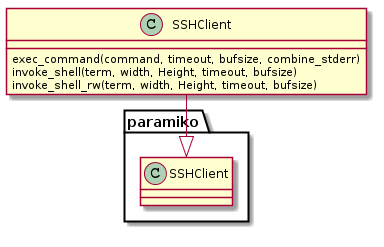
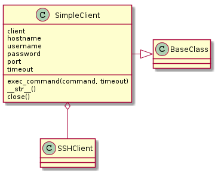
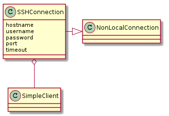
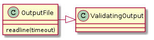

Encapsulates the Paramiko SSHClient to provide a common interface with the other connection types.
This is an extension of paramiko.SSHClient that adds a timeout to the output read attempts. It can be used transparently the same way the paramiko SSHClient is used or with the added timeout parameter.
SSHClient |

This is a wrapper around the SSHClient that sets some flags to avoid host-key errors. The following are (roughly) equivalent.
SSHClient:
c = SSHClient()
c.set_missing_host_key_policy(paramiko.AutoAddPolicy())
c.load_system_host_keys()
c.connect(hostname='192.168.10.24', username='allion')
stdin, stdout, stderror = c.exec_command('ls')
SimpleClient:
c = SimpleClient(hostname='192.168.10.24', username='allion')
stdin, stdout, stderr = c.exec_command('ls')
SimpleClient |

This class uses the SimpleClient to implement the NonLocalConnection interface.
SSHConnection |

SimpleClient Example:
connection = SimpleClient(hostname='192.168.10.24', username='allion')
stdin, output, error = connection.exec_command('ls -l')
for line in output:
print line
for line in error:
print line
Equivalent SSHConnection Example:
connection = SSHConnection(username="allion", hostname="192.168.10.24")
output, error = connection.ls('-l')
for line in output:
print line
for line in output:
print line
This acts as a file-like object that traps socket timeouts so that users do not have to know that it contains a networked connection. To prevent blocking the socket-timeout causes it to return a SPACE.
OutputFile |

if __name__ == "__main__":
c = SSHConnection('igor', 'developer')
o = c.wmic('path win32_networkadapter where netconnectionid="\'Wireless Network Connection\'" call enable')
for index, line in enumerate(o.output):
print index, line